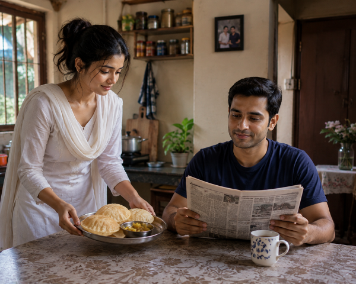
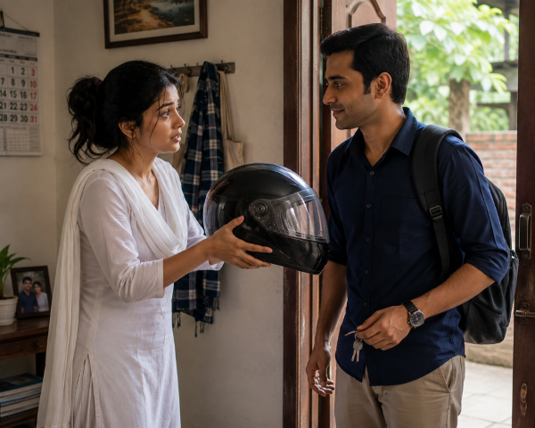
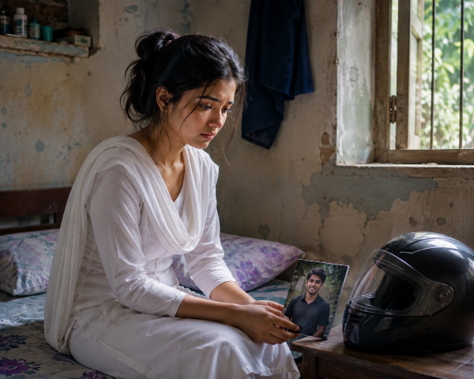

পর্ব ১

মেঘলা অরিন্দমের অপেক্ষায়, টেবিলে পড়ে থাকা কালো হেলমেট
একটি হেলমেটের দাম
সকাল সাতটা।
রান্নাঘর থেকে ভেসে আসছে গরম লুচির গন্ধ। ছোট্ট দুই কামরার বাড়িটা যেন সুখে ভরে আছে।
মেঘলা রান্নাঘরে দাঁড়িয়ে লুচি ভাজছে। মাত্র পঁচিশ বছর বয়স, মুখে সবসময় শান্ত হাসি। বিয়ের তিন বছর হলেও স্বামী অরিন্দমের প্রতি তার ভালোবাসা একটুও কমেনি।
ডাইনিং টেবিলে বসে খবরের কাগজ পড়ছিল অরিন্দম।
"শোনো, আজ আবার দেরি হয়ে যাবে," বলে ঘড়ির দিকে তাকাল সে।
মেঘলা প্লেটে লুচি আর আলুর দম সাজিয়ে এনে বলল,
— "আগে খাও। খালি পেটে অফিসে গেলে আবার গ্যাসের সমস্যা হবে।"
অরিন্দম হেসে বলল,
— "আমার ডাক্তার তো তুমি-ই।"
দুজনেই হেসে উঠল।
খাওয়া শেষ করে অরিন্দম মোটরসাইকেলের চাবি হাতে নিল।
মেঘলা আলমারি খুলে একটি কালো হেলমেট এনে তার হাতে দিল।
— "এটা পরে যাও।"
অরিন্দম মুখ বাঁকিয়ে বলল,
— "আরে, এত কাছে অফিস! পাঁচ মিনিটের রাস্তা। হেলমেট পরে কী হবে?"
মেঘলার মুখটা গম্ভীর হয়ে গেল।
— "দূর্ঘটনা বলে তো আসে না। তুমি প্রতিদিন এই একই কথা বলো।"
অরিন্দম মজা করে বলল,
— "আমার কিছু হবে না। এত চিন্তা কোরো না।"
সে হেলমেটটা আবার টেবিলের ওপর রেখে দিল।
মেঘলা শেষবারের মতো অনুরোধ করল,
— "প্লিজ... শুধু আজকের জন্য নয়, প্রতিদিন পরবে। আমার জন্য।"
অরিন্দম এগিয়ে এসে তার কপালে আলতো করে হাত রাখল।
— "সন্ধ্যায় ফিরে এসে তোমার হাতে চা খাব। তখন যত খুশি বকবে।"
দরজার বাইরে মোটরসাইকেলের ইঞ্জিন স্টার্ট হলো।
মেঘলা দরজায় দাঁড়িয়ে রইল।
বাইকটা ধীরে ধীরে রাস্তার মোড় পেরিয়ে চোখের আড়াল হয়ে গেল।
ঘরে ফিরে এসে টেবিলের ওপর পড়ে থাকা কালো হেলমেটটার দিকে তাকিয়ে রইল সে।
একটা দীর্ঘশ্বাস বেরিয়ে এল।
তার বুকের ভেতর অকারণে একটা অস্বস্তি কাজ করতে লাগল।
সে জানালার পাশে দাঁড়িয়ে আস্তে করে বলল,
— "ভগবান, ওকে ভালো রেখো..."
ঠিক তখনই...
দূরে কোথাও একটি অ্যাম্বুলেন্সের সাইরেন বেজে উঠল।
মেঘলা জানত না, কয়েক মিনিট পরেই তার জীবনের সবচেয়ে ভয়ঙ্কর খবরটি তার দরজায় কড়া নাড়বে...
চলবে...
পর্ব ২

খবর পাওয়ার পর মেঘলার নিঃস্তব্ধ যন্ত্রণা
সেই ফোনকল
মেঘলা তখনও জানালার পাশে দাঁড়িয়ে।
হঠাৎ তার মোবাইল ফোন বেজে উঠল।
অচেনা একটি নম্বর।
— "হ্যালো?"
ওপাশ থেকে কাঁপা গলায় একজন বললেন,
— "আপনি কি অরিন্দমবাবুর স্ত্রী?"
মেঘলার বুক ধক করে উঠল।
— "জি... বলছি। কী হয়েছে?"
— "আমি ট্রাফিক পুলিশ বলছি। আপনার স্বামীর একটি ছোট দুর্ঘটনা হয়েছে। আপনি যত তাড়াতাড়ি পারেন জেলা হাসপাতালে চলে আসুন।"
"ছোট দুর্ঘটনা" কথাটা শুনে মেঘলা নিজেকে সামলে নিল।
হয়তো হাত-পা একটু কেটেছে—নিজেকে এই ভেবেই সান্ত্বনা দিল।
কাঁপা হাতে দরজায় তালা লাগিয়ে সে রাস্তায় বেরিয়ে এল।
একটি অটো থামিয়ে বলল,
— "দাদা, হাসপাতালে... যত তাড়াতাড়ি পারেন।"
অটোর প্রতিটি মিনিট যেন এক একটি ঘণ্টার মতো লাগছিল।
হাসপাতালের জরুরি বিভাগের সামনে পৌঁছাতেই কয়েকজন পুলিশ দাঁড়িয়ে ছিলেন।
তারা মেঘলার দিকে তাকিয়ে একে অপরের মুখ চাওয়া-চাওয়ি করলেন।
একজন ধীরে ধীরে এগিয়ে এসে বললেন,
— "আপনি একটু আমাদের সঙ্গে আসুন।"
মেঘলার পা কাঁপতে শুরু করল।
একটি সাদা চাদরে ঢাকা স্ট্রেচারের সামনে নিয়ে যাওয়া হলো তাকে।
পুলিশ অফিসার নিচু গলায় বললেন,
— "ম্যাডাম... আমরা দুঃখিত।"
চাদরটি একটু সরাতেই...
অরিন্দমের নিথর মুখ।
মেঘলার চোখ স্থির হয়ে গেল।
এক মুহূর্তের জন্য সে যেন বিশ্বাসই করতে পারল না।
তারপর হঠাৎ চিৎকার করে উঠল—
— "না...! এটা হতে পারে না! অরিন্দম... উঠো... তুমি তো বলেছিলে সন্ধ্যায় ফিরে চা খাবে!"
হাসপাতালের করিডোরে তার কান্নার শব্দ ছড়িয়ে পড়ল।
একজন ট্রাফিক পুলিশ চোখ মুছতে মুছতে বললেন,
— "দুর্ঘটনাটা খুব বড় ছিল না। সামনে একটি সাইকেল হঠাৎ ঘুরে আসায় উনি বাইকের নিয়ন্ত্রণ হারিয়ে পড়ে যান। মাথাটা রাস্তার ধারে থাকা কংক্রিটের ডিভাইডারে আঘাত করে। যদি হেলমেটটা পরা থাকত... হয়তো আজ উনি বেঁচে যেতেন।"
মেঘলার চোখের সামনে ভেসে উঠল সকালবেলার সেই দৃশ্য...
টেবিলের ওপর পড়ে থাকা কালো হেলমেট...
আর অরিন্দমের শেষ হাসি।
সে মাটিতে বসে পড়ল।
শুধু একটাই কথা বারবার বলতে লাগল—
— "আমি কত বলেছিলাম... শুধু একটা হেলমেট... শুধু একটা হেলমেট..."
সেদিন বিকেলে অরিন্দমের নিথর দেহ বাড়িতে ফিরল।
কিন্তু মেঘলা তখনও জানত না...
তার জীবনের সবচেয়ে কঠিন লড়াই এখনও শুরুই হয়নি।
চলবে...
পর্ব ৩
হেলমেট বুকে জড়িয়ে শেষ বিদায়ের স্মৃতি
শেষ বিদায়
অরিন্দমের নিথর দেহ বাড়িতে পৌঁছাতেই চারদিকে কান্নার রোল পড়ে গেল।
প্রতিবেশীরা ছুটে এলেন। কেউ মেঘলাকে ধরে বসাল, কেউ আবার অরিন্দমের মায়ের কান্না থামানোর চেষ্টা করলেন।
মেঘলা যেন পাথর হয়ে গেছে।
সকালে যে মানুষটি হাসতে হাসতে অফিসে বেরিয়েছিল, বিকেলে সে ফিরে এল সাদা কাপড়ে ঢাকা অবস্থায়।
তার চোখের জল যেন শুকিয়ে গেছে।
সে শুধু অরিন্দমের মুখের দিকে তাকিয়ে বসে রইল।
হঠাৎ তার চোখ পড়ল ঘরের টেবিলের ওপর।
সেই কালো হেলমেটটি ঠিক যেভাবে সকালে রেখে গিয়েছিল, সেভাবেই পড়ে আছে।
মেঘলা ধীরে ধীরে হেলমেটটি বুকে জড়িয়ে ধরে ফুঁপিয়ে কেঁদে উঠল।
— "একবার যদি আমার কথা শুনতে..."
কথাটা শেষ করার আগেই কান্নায় গলা আটকে গেল।
সন্ধ্যার পর শেষকৃত্যের জন্য অরিন্দমকে নিয়ে যাওয়া হলো।
চিতার আগুন জ্বলে উঠতেই মেঘলার মনে হলো, তার নিজের জীবনটাও যেন সেই আগুনে পুড়ে ছাই হয়ে যাচ্ছে।
সে হঠাৎ অজ্ঞান হয়ে পড়ল।
পরদিন সকালে বাড়ির পরিবেশ সম্পূর্ণ বদলে গেল।
যে বাড়িতে কয়েকদিন আগেও হাসি-আনন্দ ছিল, সেখানে এখন শুধু নীরবতা।
অরিন্দমের বড় কাকা গম্ভীর গলায় বললেন,
— "এখন সংসারের খরচ কীভাবে চলবে?"
আরেকজন বললেন,
— "ছেলেটা চলে গেল, সব শেষ হয়ে গেল।"
মেঘলা চুপচাপ বসে সব শুনছিল।
কিন্তু সে খেয়াল করল, কেউ তার ভবিষ্যতের কথা একবারও জিজ্ঞাসা করল না।
ঠিক তখনই অরিন্দমের দাদা পাশের ঘরে গিয়ে নিচু গলায় বললেন,
— "বাড়িটা আর জমির কাগজগুলো আগে দেখে রাখতে হবে।"
মেঘলার কানে কথাগুলো স্পষ্ট পৌঁছে গেল।
সে অবাক হয়ে ভাবল,
"অরিন্দমের চিতার আগুন এখনও নিভল না... আর এরা সম্পত্তির হিসাব শুরু করে দিল!"
তার বুকের ভেতর হঠাৎ অজানা এক ভয় জন্ম নিল।
সে বুঝতে পারল না কেন...
কিন্তু মনে হচ্ছিল, সামনে আরও বড় ঝড় অপেক্ষা করছে।
দূরে দাঁড়িয়ে শাশুড়ি একবার তার দিকে তাকালেন।
সেই দৃষ্টিতে আর আগের মতো মায়া ছিল না।
ছিল শুধু এক অদ্ভুত শীতলতা...
চলবে...
পর্ব ৪

অপমানের মাঝে একা মেঘলা, পাশে অরিন্দমের ছবি ও হেলমেট
অপমানের শুরু
অরিন্দমের মৃত্যুর চার দিন কেটে গেছে।
বাড়িতে আত্মীয়-স্বজনের ভিড় ধীরে ধীরে কমে এসেছে। কিন্তু মেঘলার জীবন যেন প্রতিদিন আরও অন্ধকার হয়ে উঠছে।
সকালে রান্নাঘরে গিয়ে সে শাশুড়ির জন্য এক কাপ চা বানিয়ে নিয়ে এল।
— "মা, চা..."
শাশুড়ি একবার তাকিয়ে ঠান্ডা গলায় বললেন,
— "আমাকে মা বলো না। আমার ছেলে নেই, তোমার সঙ্গে আমার আর কোনো সম্পর্কও নেই।"
কথাগুলো যেন তীরের মতো এসে বিঁধল মেঘলার বুকে।
সে কিছু না বলে চায়ের কাপটা টেবিলে রেখে চলে গেল।
দুপুরে ঘরের ভেতর বসে অরিন্দমের ছবি দেখছিল সে।
হঠাৎ বাইরে থেকে জোরে জোরে কথা শোনা গেল।
অরিন্দমের বড়দা বলছে,
— "এভাবে আর কতদিন? ওকে খাওয়াবে কে?"
আরেকজন বলল,
— "ছেলেটা চলে গেছে। এখন ওর দায়িত্ব আমাদের কেন?"
শাশুড়ি দীর্ঘশ্বাস ফেলে বললেন,
— "আমি তো আর সারাজীবন ওকে রাখতে পারব না।"
মেঘলার হাত থেকে ছবিটা প্রায় পড়ে যাচ্ছিল।
সে বুঝে গেল, তাকে নিয়ে সিদ্ধান্ত নেওয়া হচ্ছে।
সন্ধ্যায় সবাই ড্রইংরুমে বসেছিল।
মেঘলাকেও ডাকা হলো।
অরিন্দমের বড়দা গম্ভীর গলায় বললেন,
— "দেখো মেঘলা, তুমি এখনও তরুণী। আমাদের সমাজ অনেক কথা বলে। তুমি এখানে থাকলে আমাদেরও অসুবিধা হবে, তোমারও হবে।"
মেঘলা শান্ত গলায় বলল,
— "আমি কোথায় যাব দাদা?"
— "তোমার বাবার বাড়ি আছে। ওখানেই চলে যাও।"
— "কিন্তু এই বাড়িটাও তো আমার সংসার... অরিন্দমের সঙ্গে আমি..."
তার কথা শেষ হওয়ার আগেই বড়দা থামিয়ে দিল।
— "এই বাড়ির ওপর তোমার কোনো অধিকার নেই। কাল সকালেই চলে যাও।"
মেঘলা শাশুড়ির দিকে তাকাল।
হয়তো তিনি কিছু বলবেন...
হয়তো বলবেন, "না, মেঘলা এখানেই থাকবে।"
কিন্তু শাশুড়ি মাথা নিচু করে রইলেন।
একটি কথাও বললেন না।
সেদিন রাতে মেঘলা অরিন্দমের ছবিটা বুকে জড়িয়ে সারারাত কাঁদল।
পরদিন ভোরে সে নিজের কয়েকটি কাপড়, কিছু বই আর অরিন্দমের সেই কালো হেলমেটটি একটি পুরোনো ব্যাগে ভরে নিল।
বাড়ি থেকে বেরিয়ে আসার আগে শেষবারের মতো ঘুরে তাকাল।
এই বাড়িতেই তার হাজারো স্মৃতি।
এই বাড়িতেই ছিল তার স্বপ্নের সংসার।
ঠিক তখনই বড়দা দরজার ভেতর থেকে বলল,
— "চাবিটা টেবিলের ওপর রেখে যাও।"
মেঘলা কাঁপা হাতে চাবিটা রেখে নীরবে বাইরে বেরিয়ে এল।
তার চোখ ভিজে ছিল।
কিন্তু সে জানত না...
বাপের বাড়িতে তার জন্য অপেক্ষা করছে আরও কঠিন অপমান।
চলবে...
পর্ব ৫
নতুন ঠিকানায় ফেলে আসা স্মৃতি আঁকড়ে থাকা মেঘলা
নিজের বাড়িতেও পর
মেঘলা একটি পুরোনো ব্যাগ কাঁধে নিয়ে বাপের বাড়ির দরজায় এসে দাঁড়াল।
এক হাতে অরিন্দমের ছবি, অন্য হাতে সেই কালো হেলমেট।
দরজায় কড়া নাড়তেই তার বড় ভাই সুব্রত দরজা খুলল।
বোনকে দেখে সে কিছুক্ষণ চুপ করে রইল।
তারপর নিচু গলায় বলল,
— "ভেতরে আয়।"
মেঘলা ঘরে ঢুকতেই তার ভাবি শীলা রান্নাঘর থেকে বেরিয়ে এল।
মুখে বিরক্তির ছাপ।
— "এত বড় ব্যাগ নিয়ে এসেছ কেন?"
মেঘলা মাথা নিচু করে বলল,
— "আমি... কিছুদিন থাকতে চাই।"
শীলা ঠোঁট বাঁকিয়ে বলল,
— "কিছুদিন মানে কতদিন? এক মাস? এক বছর? না সারাজীবন?"
সুব্রত সঙ্গে সঙ্গে বলল,
— "শীলা, এখন এসব বলো না।"
— "কেন বলব না? সংসারের সব খরচ কি গাছে ধরে? এখন থেকে একজন মানুষ বেশি খাবে, থাকবে, বিদ্যুৎ ব্যবহার করবে। সব হিসাব তো আমাকেই করতে হবে!"
মেঘলার মাথা আরও নিচু হয়ে গেল।
সে বুঝতে পারল, নিজের বাড়িতেও সে অতিথি নয়—একটা বোঝা।
সেই রাতে তাকে আলাদা কোনো ঘর দেওয়া হলো না।
বাড়ির পুরোনো স্টোররুমটা পরিষ্কার করে সেখানে একটা ভাঙা খাট পেতে দেওয়া হলো।
ঘরটায় একটা ছোট জানালা।
দেয়ালের প্লাস্টার খসে পড়েছে।
মেঘলা ব্যাগ খুলে অরিন্দমের ছবিটা টেবিলের ওপর রাখল।
তার পাশে রাখল কালো হেলমেটটি।
ছবির দিকে তাকিয়ে সে ধীরে বলল,
— "তুমি বলেছিলে, কখনও আমাকে একা ছেড়ে যাবে না..."
চোখ থেকে টপটপ করে জল পড়তে লাগল।
পরদিন সকাল।
মেঘলা ঘুম থেকে উঠতেই ভাবির গলা।
— "শুনছ? এখানে থাকতে হলে বসে বসে খাওয়া চলবে না। বাসন মাজবে, কাপড় কাচবে, ঘর মোছবে।"
মেঘলা কোনো প্রতিবাদ করল না।
সে চুপচাপ কাজে লেগে গেল।
দুপুরে সবাই খাওয়া শেষ করার পরে তার জন্য রাখা হলো ঠান্ডা ভাত আর আগের দিনের তরকারি।
সুব্রত একবার কিছু বলতে গিয়েও স্ত্রীর মুখের দিকে তাকিয়ে চুপ করে গেল।
মেঘলা হাসিমুখেই খেতে শুরু করল।
তার চোখে জল থাকলেও মুখে অভিযোগ ছিল না।
রাতে স্টোররুমে শুয়ে সে বাবার পুরোনো আলমারি খুলছিল।
হঠাৎ একটি ফাইল নিচে পড়ে গেল।
ফাইলের ওপর লেখা—
"মেঘলার শিক্ষাগত সনদপত্র"
সে একে একে সব সার্টিফিকেট বের করল।
মাধ্যমিক, উচ্চমাধ্যমিক, স্নাতক...
বাবা একসময় বলেছিলেন,
"পড়াশোনা কখনও বৃথা যায় না মা। একদিন এই কাগজগুলোই তোমার সবচেয়ে বড় শক্তি হবে।"
মেঘলা সার্টিফিকেটগুলো বুকের কাছে চেপে ধরল।
তার চোখে অনেক দিন পর একফোঁটা আশার আলো জ্বলে উঠল।
সে মনে মনে প্রতিজ্ঞা করল—
"আমি কারও দয়ায় বাঁচব না। চাকরি করব। নিজের পায়ে দাঁড়াব।"
কিন্তু সে জানত না...
পরদিন থেকেই চাকরির খোঁজে বেরিয়ে তাকে এমন কিছু মানুষের মুখোমুখি হতে হবে, যারা তার যোগ্যতা নয়, তার সৌন্দর্যের দাম দিতে চাইবে।
চলবে...
আপনার শেষ পঠিত জায়গা স্বয়ংক্রিয়ভাবে মনে রাখা হচ্ছে।